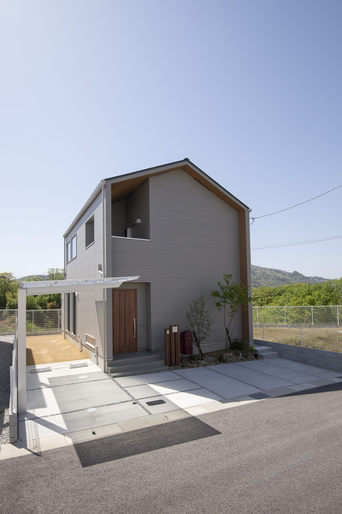
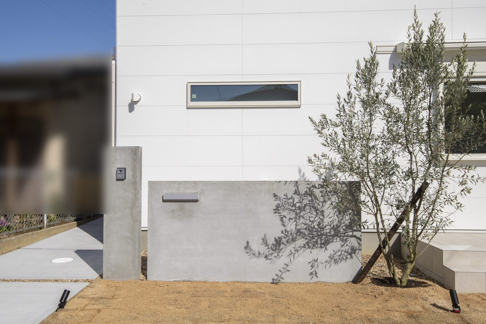

土地の資料に「駐車二台」とあっても、毎日使いやすいかどうかは別に確かめたいところです。奈良で家を建てる際は、車の台数と建物の配置を一緒に考えましょう。大阪や京都から移り住み、車の使い方が変わるご家族にも大切な確認です。

この写真では、建物の前に舗装された空間が広がっています。車を置くときは、この空間に車だけでなく、人が玄関へ向かう道も残るかを図面で確かめます。写真から駐車可能台数や寸法は判断できません。
二台の車を、誰がいつ使うか
二台を縦に並べる配置では、奥の車を出すために手前の車を動かす場合があります。先に出勤する人、子どもを送る人、帰宅が遅い人を整理すると、台数だけでは分からない条件が見えてきます。
今の車の寸法に加え、将来買い替える可能性も担当者に伝えてください。車種が決まっていなくても、背の高い車を考えている、子どもの乗り降りに余裕がほしい、といった希望が配置の材料になります。
道路から入る動きを確かめる
駐車場の幅だけでなく、前面道路から曲がって入れるかも見ます。向かい側の塀や電柱、道路と敷地の高低差によって、同じ広さでも使い勝手は変わります。寸法と配置図で確認し、必要なら現地で担当者に相談します。
空き地だからといって、無断で車を入れて試すことは避けてください。土地の境界や通行の条件がはっきりしない場合も、売主側と確認してから判断します。
車と人の道を、分けて考える
車：ドアを開ける余裕も確認
人：荷物を持って玄関まで歩く
降りた後の道を残す
車を置いたら、運転席から玄関まで歩く場所が残るかを見ます。傘を差す、買い物袋を持つ、子どもをチャイルドシートから降ろす。こうした動作には、車の寸法とは別の余裕が必要です。
自転車やベビーカーを置くなら、その場所も最初から図面に入れます。駐車するたびに自転車を移動する配置になっていないか、家族の帰宅時間が重なっても通れるかを確かめます。

この実例には、白い塀と植栽があります。外構を計画する際は、こうした要素を含めて、車から降りる場所や玄関への通り道を確かめてください。
土地と建物と外構を、一枚で見る
建物だけを先に大きくすると、駐車場や玄関への通路が窮屈になることがあります。候補地が見つかった段階で、建物、車、通路、自転車を同じ図面に置いてもらいましょう。
カーポートや門柱を希望する場合も、後から置けると決めつけずに相談します。土地の面積だけで候補を落としたり選んだりせず、その敷地で普段の一日が無理なく送れるかを判断の軸にしてください。
関連記事：奈良の土地探しの順番
よくある質問
駐車二台と書かれた土地なら安心ですか？
車の寸法、並べ方、前面道路、家族が使う順番によって使い勝手は変わるため、配置図で確かめます。
土地を買う前でも配置の相談はできますか？
候補地の資料と車の寸法、台数、使い方をそろえると、建物と駐車場を一緒に検討しやすくなります。